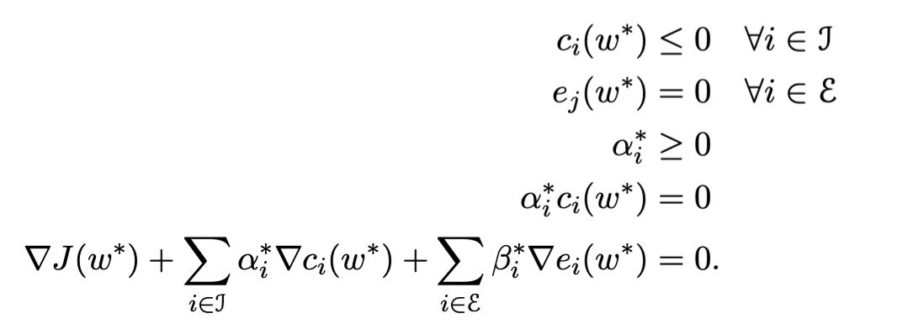
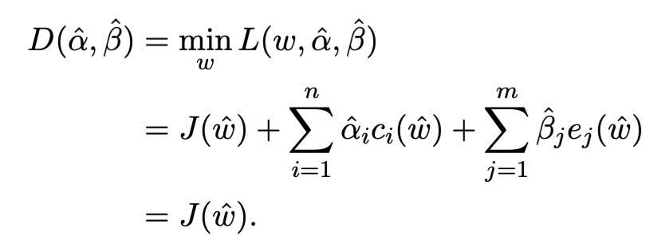
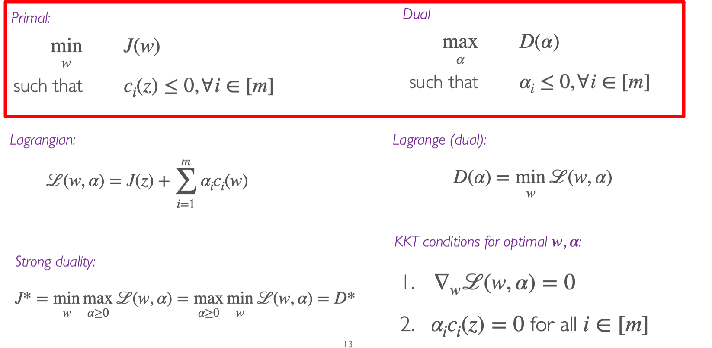
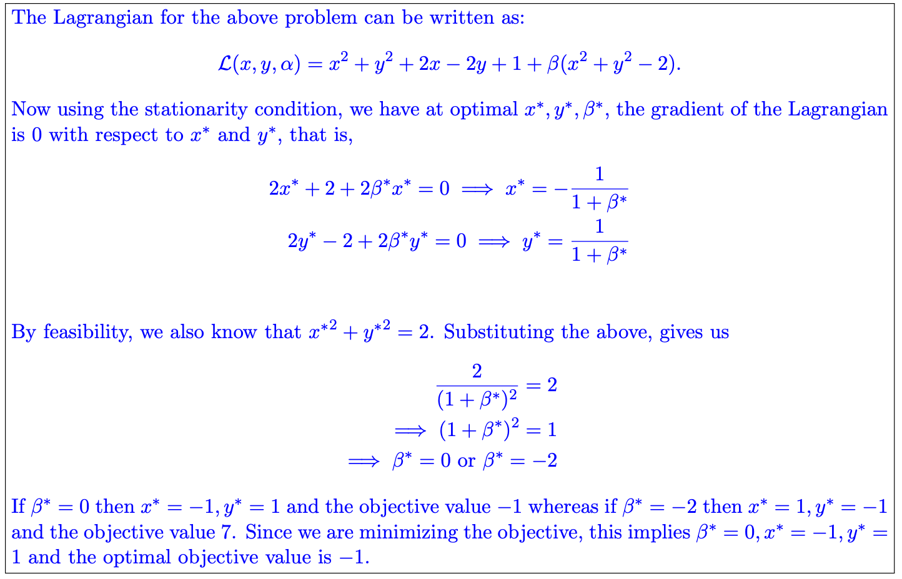
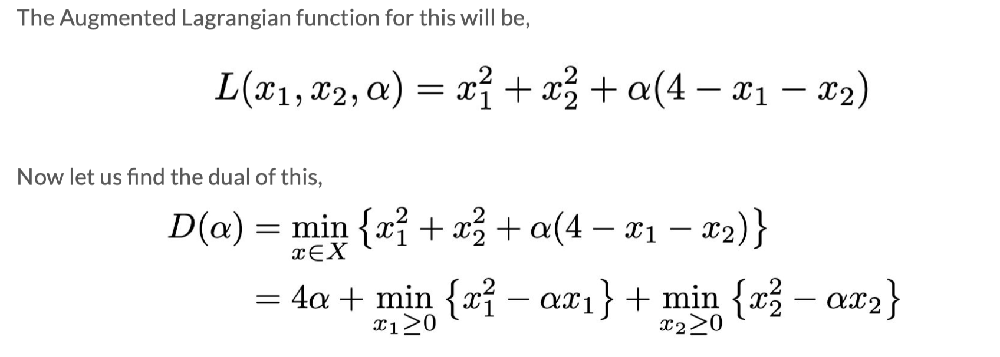
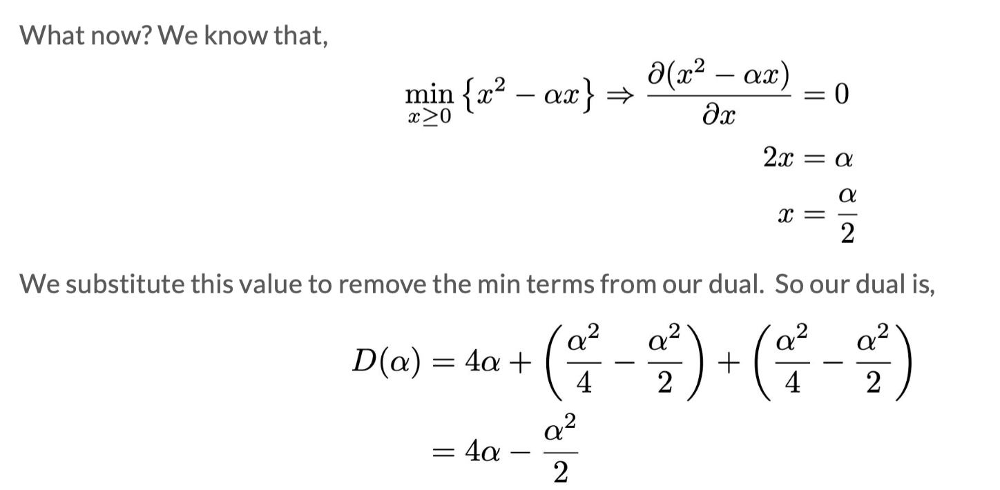
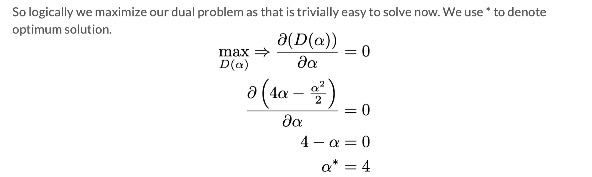

生物医学工程 | 机器学习 - Duality
目的：一般算法如MLE只能够求无约束的式子的最优化值，如 $\max_\omega \frac{1}{m}\sum l(\omega; x_i, j_i)$。但是如果我们遇到了有constraint的算法，则需要用Duality，LP，QP来解决这类问题。此外，Duality，LP，QP也可以解决第一类没有constraint的类型
Duality Problem
题目类型
$$
\min_\omega J(\omega)\
\text{s.t. } c_i(\omega)\leq 0 \text{, for } i\in {j}\
e_i(\omega)= 0 \text{, for } i\in {\epsilon}——（0）
$$
Augmented Lagrange
$$
L(\omega, \alpha, \beta) = J(\omega)+\sum_{i\in j}\alpha_i c_i(\omega)+\sum_{i\in \epsilon}\beta_ie_i(\omega)——(1)
$$
dual feasbile指 $\alpha_i\geq0, \beta_i\in \mathbb{R}$
定理1
从式（1）可以求出来
$$
\max_{\alpha\geq0, \beta}L(\omega,\alpha,\beta)=\left{ \begin{matrix}
J(\omega) \text{, if $\omega$ is feasible}\
\infty, \text{otherwise}
\end{matrix}
\right.——(2)
$$
尤其是，如果$J^*=\min_\omega J(\omega)$，且$c_i(\omega)\leq 0$且$e_i(\omega)=0$，则
$$
J^*=\min_\omega \max_{\alpha\geq0, \beta} L(\omega,\alpha,\beta)
$$
证明见pdf
定理2｜weak duality
定义Lagrange dual function如下
$$
D(\alpha, \beta) = \min_\omega L(\omega, \alpha, \beta)
$$
则上式满足
$$
D(\alpha, \beta)\leq J(\omega)
$$
for all feasible $ \omega $and $\alpha \geq 0$ and $\beta$。尤其是
$$
D^:=\max_{\alpha\geq0, \beta} \min_\omega L(\omega,\alpha,\beta)\leq\min_\omega \max_{\alpha\geq0, \beta} L(\omega,\alpha,\beta)=J^
$$
注意：weak duality不一定要求$J(\omega)$是convex的
定理3｜strong duality
如果$J(\omega), c_i, e_i$都是convex，且下列constraint qualification满足：
存在一个$ \omega $使得$c_i(\omega)<0$, for all $i\in j$
则式（1）满足
$$
D^:=\max_{\alpha\geq0, \beta} \min_\omega L(\omega,\alpha,\beta)=\min_\omega \max_{\alpha\geq0, \beta} L(\omega,\alpha,\beta)=J^
$$
注意$D^* = \max_{\alpha>0, \beta} D(\alpha, \beta)$是duality problem optimal 的情况，$J^* = min_{\omega}J(\omega)$是original problem optimal的情况。
KKT condition

如果primal problem is convex，则KKT条件充分且必要。即如果$\hat\omega$和$(\hat\alpha, \hat\beta)$满足KKT条件，则$\hat\omega$和$(\hat\alpha, \hat\beta)$是primal和dual optimal，即

Linear Problem
题目满足
$$
\min \ c^Tw \Rightarrow J(\omega)\
\text{s.t.} \ A\omega=b \Rightarrow e_j(\omega)\
\omega \geq 0 \Rightarrow c_i(\omega)
$$
$ D(\alpha, \beta) $for LP is still a LP
Quadratic Problem
题目满足
$$
\min \omega^TG\omega+\omega^Td\
\text{s.t.}\ A\omega=b\
\omega \geq0
$$
具体怎么带入duality的可以参考pdf
小结

例题
一般思路：
1）写出L；
2）$D=\min(L)$：对w求偏导（有时候有两个），用 $\alpha$ 和 $\beta$ 表示 $w$，得到 $D$；
3）$\max D$ 得 $D^，\alpha^，\beta^$：对D求偏导或者用KKT条件得到 $D^$，从而得到 $\alpha^, \beta^$
4）$J^$，$w^$：带入第二步的式子，得到w*。J*=D*





声明：此blog内容为上课笔记，仅为分享使用。部分图片和内容取材于课本、老师课件、网络。如果有侵权，请联系aursus.blog@gmail.com删除。